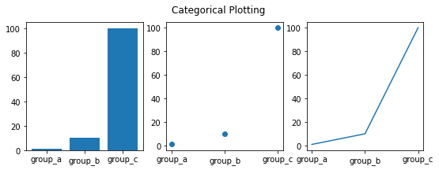
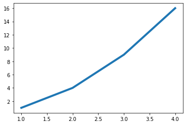
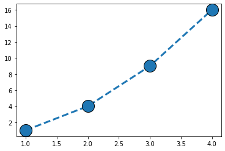
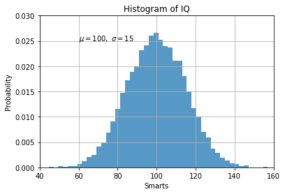

Tutorial básico de pyplot
Diplomado en Analítica para Mercados de Energía
[1]:
import matplotlib.pyplot as plt
[2]:
#
# Especificación únicamente de `y`
#
plt.plot([1, 2, 3, 4])
plt.ylabel("some numbers")
plt.show()

[3]:
#
# Especificación de `x` y `y`
#
plt.plot(
[1, 2, 3, 4],
[1, 4, 9, 16],
)
plt.show()

[4]:
#
# Especificación del estilo
#
plt.plot(
[1, 2, 3, 4],
[1, 4, 9, 16],
"ro",
)
plt.axis([0, 6, 0, 20])
plt.show()

[5]:
#
# Especificación del estilo
#
import numpy as np
t = np.arange(0.0, 5.0, 0.2)
plt.plot(
# --------- Primera línea ---------
t,
t,
"r--",
# --------- Segunda línea ---------
t,
t ** 2,
"bs",
# --------- Tercera línea ---------
t,
t ** 3,
"g^",
)
plt.show()

[6]:
#
# Estilos de línea
#
x = np.linspace(0, 10, 10)
linestyles = ["solid", "dashed", "dashdot", "dotted"]
for i_style, style in enumerate(linestyles):
plt.plot(x, x + i_style, linestyle=style, label=style)
plt.legend()
plt.show()

[7]:
#
# Estilos de marcador
#
from matplotlib.lines import Line2D
plt.figure(figsize=(4, 14))
markers = [m for m, func in Line2D.markers.items()]
text_style = dict(
horizontalalignment="right",
verticalalignment="center",
fontsize=14,
fontfamily="monospace",
)
marker_style = dict(
linestyle=":",
color="0.8",
markersize=12,
markerfacecolor="tab:blue",
markeredgecolor="tab:blue",
)
for y, marker in enumerate(markers):
plt.text(-0.5, y, repr(marker), **text_style)
plt.plot([y] * 3, marker=marker, **marker_style)
# plt.gca().margins(0.2)
plt.gca().set_axis_off()
plt.gca().invert_yaxis()
plt.show()

[8]:
#
# Uso de palabras reservadas
#
data = {
"a": np.arange(50),
"c": np.random.randint(0, 50, 50),
"d": np.random.randn(50),
}
data["b"] = data["a"] + 10 * np.random.randn(50)
data["d"] = np.abs(data["d"]) * 100
plt.scatter(
"a",
"b",
c="c",
s="d",
data=data,
)
plt.xlabel("entry a")
plt.ylabel("entry b")
plt.show()

[9]:
#
# Gráficos con variables categóricas
#
names = ["group_a", "group_b", "group_c"]
values = [1, 10, 100]
plt.figure(figsize=(9, 3))
plt.subplot(131)
plt.bar(names, values)
plt.subplot(132)
plt.scatter(names, values)
plt.subplot(133)
plt.plot(names, values)
plt.suptitle("Categorical Plotting")
plt.show()

[10]:
#
# Control de las propiedades de las líneas usando argumentos
# de la función
#
x = [1, 2, 3, 4]
y = [1, 4, 9, 16]
plt.plot(x, y, linewidth=4.0)
plt.show()

[11]:
#
# Control de las propiedades de las líneas usando
# setter methods
#
x = [1, 2, 3, 4]
y = [1, 4, 9, 16]
(line,) = plt.plot(x, y, "-")
line.set_antialiased(False)
plt.show()

[12]:
#
# Control de las propiedades de las líneas usando
# setp con keyword args
#
x = [1, 2, 3, 4]
y = [1, 4, 9, 16]
lines = plt.plot(x, y)
plt.setp(lines, color="r", linewidth=2.0)
plt.show()

[13]:
#
# Control de las propiedades de las líneas usando
# setp con parejas string value (Matlab style)
#
x = [1, 2, 3, 4]
y = [1, 4, 9, 16]
lines = plt.plot(x, y)
plt.setp(lines, "color", "r", "linewidth", 2.0)
plt.show()

Propiedad Tipo de valor
--------------------------------------------------------------------
alpha float
color / c any matplotlib color
linestyle / ls [ '-' | '--' | '-.' | ':' | 'steps' | ...]
linewidth / lw float
marker ['+' | ',' | '.' | '1' | '2' | '3' | '4' ]
markeredgecolor or mec any matplotlib color
markerfacecolor or mfc any matplotlib color
markersize or ms float
zorder any number
[14]:
x = [1, 2, 3, 4]
y = [1, 4, 9, 16]
plt.plot(
x,
y,
linestyle="--",
lw=3,
marker="o",
markeredgecolor="k",
ms=20,
)
plt.show()

[15]:
#
# Varias figuras y ejes
#
def f(t):
return np.exp(-t) * np.cos(2 * np.pi * t)
t1 = np.arange(0.0, 5.0, 0.1)
t2 = np.arange(0.0, 5.0, 0.02)
plt.figure()
plt.subplot(211)
plt.plot(t1, f(t1), "bo", t2, f(t2), "k")
plt.subplot(212)
plt.plot(t2, np.cos(2 * np.pi * t2), "r--")
plt.show()

[16]:
#
# Texto
#
mu, sigma = 100, 15
x = mu + sigma * np.random.randn(10000)
n, bins, patches = plt.hist(x, 50, density=1, facecolor="tab:blue", alpha=0.75)
plt.xlabel("Smarts")
plt.ylabel("Probability")
plt.title("Histogram of IQ")
plt.text(60, 0.025, r"$\mu=100,\ \sigma=15$")
plt.axis([40, 160, 0, 0.03])
plt.grid(True)
plt.show()

[17]:
#
# Anotaciones
#
ax = plt.subplot()
t = np.arange(0.0, 5.0, 0.01)
s = np.cos(2 * np.pi * t)
plt.plot(t, s, lw=2)
plt.annotate(
"local max",
xy=(2, 1),
xytext=(3, 1.5),
arrowprops=dict(facecolor="black", shrink=0.05),
)
plt.ylim(-2, 2)
plt.show()

[18]:
import warnings
warnings.filterwarnings("ignore")
#
# Tipos de ejes
#
np.random.seed(19680801)
y = np.random.normal(loc=0.5, scale=0.4, size=1000)
y = y[(y > 0) & (y < 1)]
y.sort()
x = np.arange(len(y))
plt.figure()
#
# linear
#
plt.subplot(221)
plt.plot(x, y)
plt.yscale("linear")
plt.title("linear")
plt.grid(True)
#
# log
#
plt.subplot(222)
plt.plot(x, y)
plt.yscale("log")
plt.title("log")
plt.grid(True)
#
# symmetric log
#
plt.subplot(223)
plt.plot(x, y - y.mean())
plt.yscale("symlog", linthresh=0.01)
plt.title("symlog")
plt.grid(True)
#
# logit
#
plt.subplot(224)
plt.plot(x, y)
plt.yscale("logit")
plt.title("logit")
plt.grid(True)
plt.subplots_adjust(
top=0.92, bottom=0.08, left=0.10, right=0.95, hspace=0.25, wspace=0.35
)
plt.show()